15 Insights from Colorado School Enrollment Data
Source:vignettes/enrollment_hooks.Rmd
enrollment_hooks.Rmd
library(coschooldata)
library(dplyr)
library(tidyr)
library(ggplot2)
theme_set(theme_minimal(base_size = 14))
# Load pre-computed data bundled with the package.
# This ensures vignettes build reliably in CI without network access.
# Falls back to live fetch if bundled data is unavailable.
enr <- tryCatch(
readRDS(system.file("extdata", "enrollment_bundled.rds", package = "coschooldata")),
error = function(e) {
warning("Bundled data not found, fetching live data")
fetch_enr_multi(c(2020, 2024), use_cache = TRUE)
}
)
if (is.null(enr) || nrow(enr) == 0) {
enr <- fetch_enr_multi(c(2020, 2024), use_cache = TRUE)
}
enr_2024 <- tryCatch(
readRDS(system.file("extdata", "enrollment_2024_tidy.rds", package = "coschooldata")),
error = function(e) {
warning("Bundled data not found, fetching live data")
fetch_enr(2024, use_cache = TRUE)
}
)
if (is.null(enr_2024) || nrow(enr_2024) == 0) {
enr_2024 <- fetch_enr(2024, use_cache = TRUE)
}This vignette explores Colorado’s public school enrollment data, surfacing key trends and demographic patterns. Colorado is part of the state schooldata project, a family of R packages providing consistent access to school enrollment data from all 50 states.
Data years: 2020 and 2024 (Student October Count, collected by the Colorado Department of Education). 881,000 students across 187 districts in the Centennial State.
1. Colorado lost 31,584 students since 2020
The pandemic accelerated enrollment decline in a state that had been growing for a decade. Colorado shed 3.5% of its student population between 2020 and 2024.
state_totals <- enr |>
filter(is_state, subgroup == "total_enrollment", grade_level == "TOTAL") |>
select(end_year, n_students) |>
mutate(change = n_students - lag(n_students),
pct_change = round(change / lag(n_students) * 100, 2))
stopifnot(nrow(state_totals) > 0)
state_totals
#> end_year n_students change pct_change
#> 1 2020 913030 NA NA
#> 2 2024 881446 -31584 -3.46
print(state_totals)
#> end_year n_students change pct_change
#> 1 2020 913030 NA NA
#> 2 2024 881446 -31584 -3.46
ggplot(state_totals, aes(x = end_year, y = n_students)) +
geom_line(linewidth = 1.2, color = "#003366") +
geom_point(size = 3, color = "#003366") +
geom_vline(xintercept = 2020.5, linetype = "dashed", alpha = 0.5) +
annotate("text", x = 2020.5, y = max(state_totals$n_students) * 0.99,
label = "COVID", hjust = -0.1, size = 3) +
scale_y_continuous(labels = scales::comma, limits = c(850000, NA)) +
labs(
title = "Colorado Public School Enrollment (2020 vs 2024)",
subtitle = "31,584 fewer students -- a 3.5% decline",
x = "School Year (ending)",
y = "Total Enrollment"
)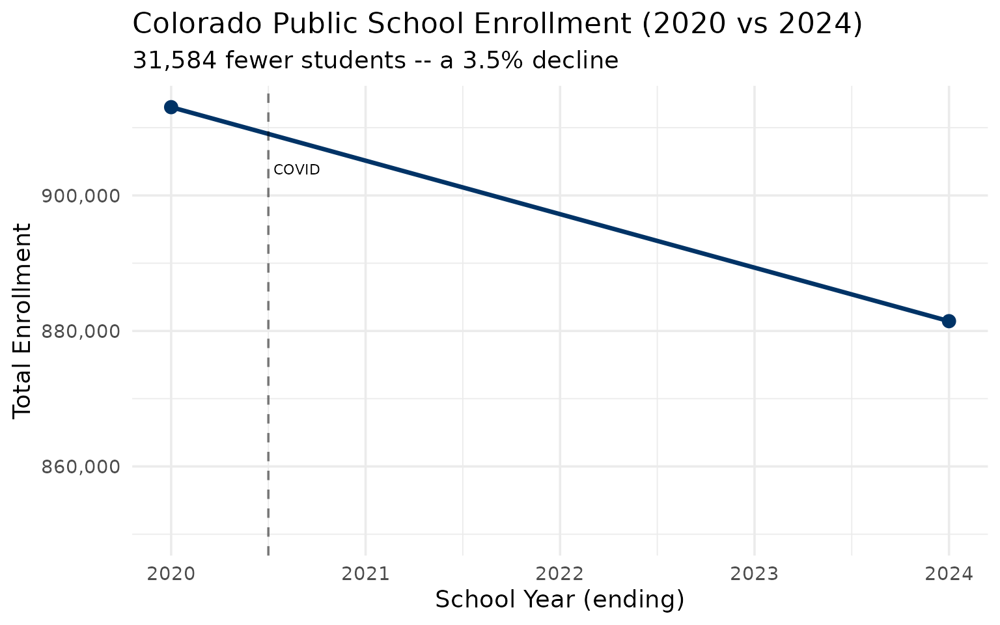
2. Denver lost 3,877 students but remains the largest district
Denver County 1 dropped from 92,112 to 88,235 students, a 4.2% decline. Despite the losses, it is still Colorado’s biggest district by a wide margin.
denver <- enr |>
filter(is_district, subgroup == "total_enrollment", grade_level == "TOTAL",
grepl("Denver County", district_name)) |>
select(end_year, district_name, n_students) |>
mutate(change = n_students - lag(n_students),
pct_change = round(change / lag(n_students) * 100, 2))
stopifnot(nrow(denver) > 0)
denver
#> end_year district_name n_students change pct_change
#> 1 2020 Denver County 1 92112 NA NA
#> 2 2024 Denver County 1 88235 -3877 -4.21
top4 <- enr |>
filter(is_district, subgroup == "total_enrollment", grade_level == "TOTAL",
grepl("Denver County|Douglas County|Jefferson County|Cherry Creek", district_name))
stopifnot(nrow(top4) > 0)
print(top4 |> select(end_year, district_name, n_students))
#> end_year district_name n_students
#> 1 2020 Cherry Creek 5 56172
#> 2 2020 Denver County 1 92112
#> 3 2020 Douglas County Re 1 67305
#> 4 2020 Jefferson County R-1 84032
#> 5 2024 Cherry Creek 5 52419
#> 6 2024 Denver County 1 88235
#> 7 2024 Douglas County Re 1 61964
#> 8 2024 Jefferson County R-1 76172
ggplot(top4, aes(x = end_year, y = n_students, color = district_name)) +
geom_line(linewidth = 1.2) +
geom_point(size = 3) +
scale_y_continuous(labels = scales::comma) +
labs(
title = "Colorado's Largest Districts: All Declining",
subtitle = "Denver, Jeffco, Douglas County, and Cherry Creek all lost students",
x = "School Year",
y = "Enrollment",
color = "District"
)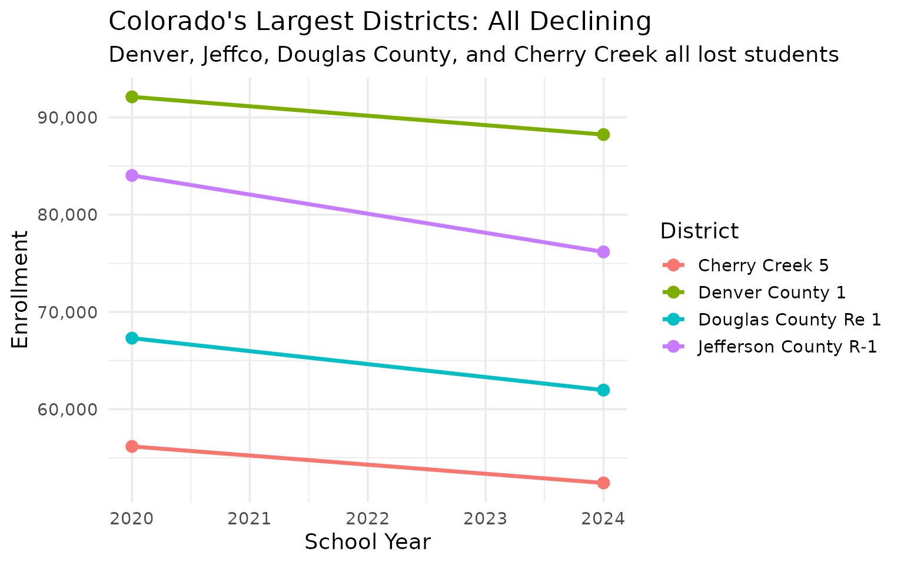
3. Jefferson County lost 7,860 students – shrinking faster than Denver
Jeffco shed 9.4% of its enrollment between 2020 and 2024, nearly 8,000 students. That is a steeper percentage decline than Denver.
jeffco <- enr |>
filter(is_district, subgroup == "total_enrollment", grade_level == "TOTAL",
grepl("Jefferson County", district_name)) |>
select(end_year, district_name, n_students) |>
mutate(change = n_students - lag(n_students),
pct_change = round(change / lag(n_students) * 100, 2))
stopifnot(nrow(jeffco) > 0)
jeffco
#> end_year district_name n_students change pct_change
#> 1 2020 Jefferson County R-1 84032 NA NA
#> 2 2024 Jefferson County R-1 76172 -7860 -9.35
front_range <- enr |>
filter(is_district, subgroup == "total_enrollment", grade_level == "TOTAL",
grepl("Jefferson County|Denver County|Douglas County", district_name))
print(front_range |> select(end_year, district_name, n_students))
#> end_year district_name n_students
#> 1 2020 Denver County 1 92112
#> 2 2020 Douglas County Re 1 67305
#> 3 2020 Jefferson County R-1 84032
#> 4 2024 Denver County 1 88235
#> 5 2024 Douglas County Re 1 61964
#> 6 2024 Jefferson County R-1 76172
ggplot(front_range, aes(x = end_year, y = n_students, color = district_name)) +
geom_line(linewidth = 1.2) +
geom_point(size = 3) +
scale_y_continuous(labels = scales::comma) +
labs(
title = "Front Range Giants: Enrollment Trends",
subtitle = "Jeffco's 9.4% decline outpaces Denver's 4.2%",
x = "School Year",
y = "Enrollment",
color = "District"
)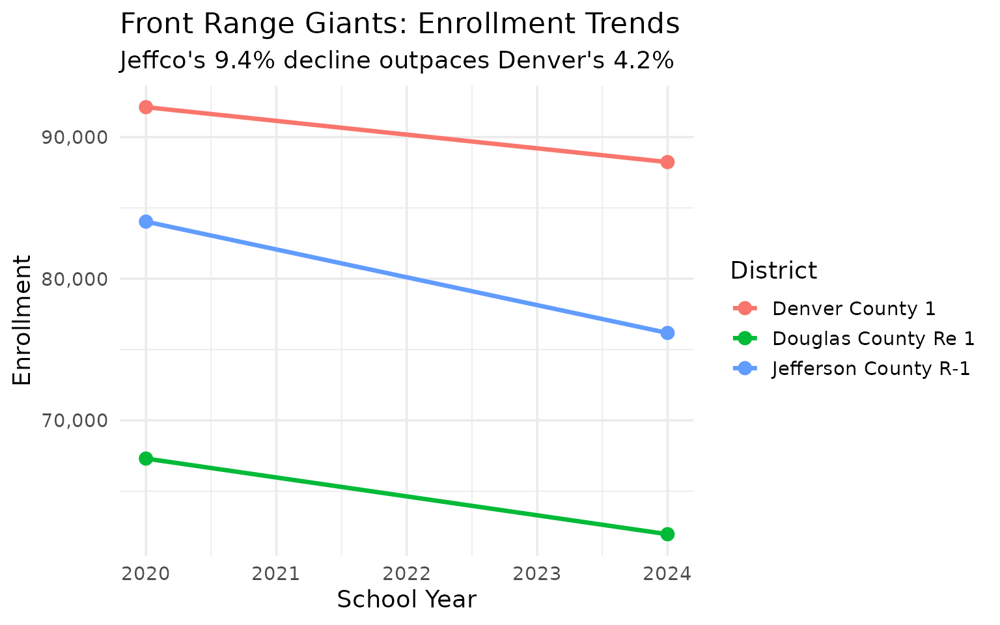
4. Hispanic students are now 35.5% of enrollment
Hispanic students make up the second-largest group in Colorado, just behind white students. The Hispanic share grew from 33.9% in 2020 to 35.5% in 2024.
demographics <- enr_2024 |>
filter(is_state, grade_level == "TOTAL",
subgroup %in% c("hispanic", "white", "black", "asian",
"native_american", "multiracial", "pacific_islander")) |>
mutate(pct = round(pct * 100, 1)) |>
select(subgroup, n_students, pct) |>
arrange(desc(n_students))
stopifnot(nrow(demographics) > 0)
demographics
#> subgroup n_students pct
#> 1 white 444973 50.5
#> 2 hispanic 312685 35.5
#> 3 multiracial 46570 5.3
#> 4 black 40070 4.5
#> 5 asian 28899 3.3
#> 6 native_american 5348 0.6
#> 7 pacific_islander 2901 0.3
print(demographics)
#> subgroup n_students pct
#> 1 white 444973 50.5
#> 2 hispanic 312685 35.5
#> 3 multiracial 46570 5.3
#> 4 black 40070 4.5
#> 5 asian 28899 3.3
#> 6 native_american 5348 0.6
#> 7 pacific_islander 2901 0.3
demographics |>
mutate(subgroup = forcats::fct_reorder(subgroup, n_students)) |>
ggplot(aes(x = n_students, y = subgroup, fill = subgroup)) +
geom_col(show.legend = FALSE) +
geom_text(aes(label = paste0(pct, "%")), hjust = -0.1) +
scale_x_continuous(labels = scales::comma, expand = expansion(mult = c(0, 0.15))) +
scale_fill_brewer(palette = "Set2") +
labs(
title = "Colorado Student Demographics (2024)",
subtitle = "Hispanic students are over a third of enrollment",
x = "Number of Students",
y = NULL
)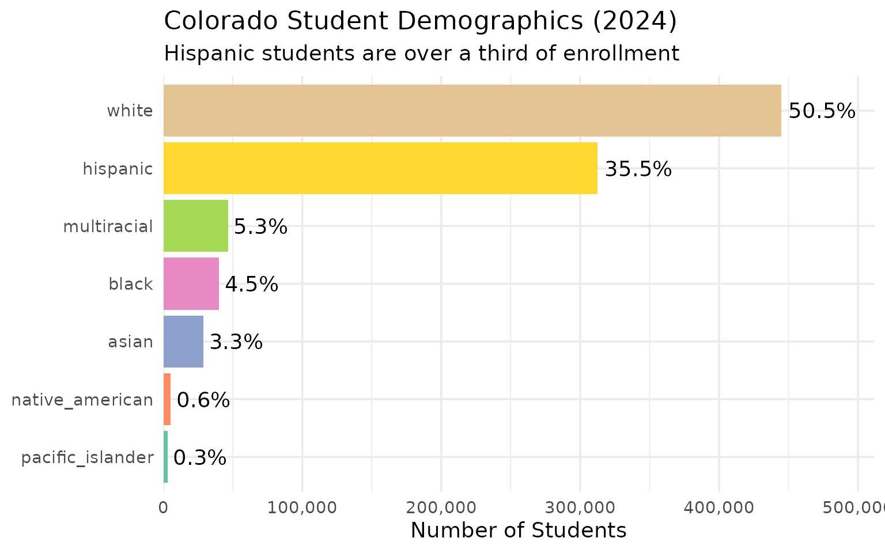
5. White share dropped below 52.9% to 50.5% in four years
White students are still the largest group but their share fell 2.4 percentage points while the multiracial population surged from 4.5% to 5.3%.
demo_shift <- enr |>
filter(is_state, grade_level == "TOTAL",
subgroup %in% c("hispanic", "white", "black", "asian", "multiracial")) |>
select(end_year, subgroup, n_students, pct) |>
mutate(pct = round(pct * 100, 1))
stopifnot(nrow(demo_shift) > 0)
demo_shift
#> end_year subgroup n_students pct
#> 1 2020 asian 29207 3.2
#> 2 2020 black 41550 4.6
#> 3 2020 hispanic 309900 33.9
#> 4 2020 multiracial 40785 4.5
#> 5 2020 white 482951 52.9
#> 6 2024 asian 28899 3.3
#> 7 2024 black 40070 4.5
#> 8 2024 hispanic 312685 35.5
#> 9 2024 multiracial 46570 5.3
#> 10 2024 white 444973 50.5
print(demo_shift)
#> end_year subgroup n_students pct
#> 1 2020 asian 29207 3.2
#> 2 2020 black 41550 4.6
#> 3 2020 hispanic 309900 33.9
#> 4 2020 multiracial 40785 4.5
#> 5 2020 white 482951 52.9
#> 6 2024 asian 28899 3.3
#> 7 2024 black 40070 4.5
#> 8 2024 hispanic 312685 35.5
#> 9 2024 multiracial 46570 5.3
#> 10 2024 white 444973 50.5
demo_shift |>
mutate(subgroup = forcats::fct_reorder(subgroup, n_students, .fun = max)) |>
ggplot(aes(x = subgroup, y = pct, fill = factor(end_year))) +
geom_col(position = "dodge") +
geom_text(aes(label = paste0(pct, "%")),
position = position_dodge(width = 0.9), vjust = -0.3, size = 3) +
scale_fill_manual(values = c("2020" = "#90CAF9", "2024" = "#1565C0")) +
scale_y_continuous(expand = expansion(mult = c(0, 0.15))) +
labs(
title = "Colorado Demographic Shift: 2020 vs 2024",
subtitle = "White share dropped 2.4 percentage points; multiracial surged",
x = NULL,
y = "% of Total Enrollment",
fill = "Year"
)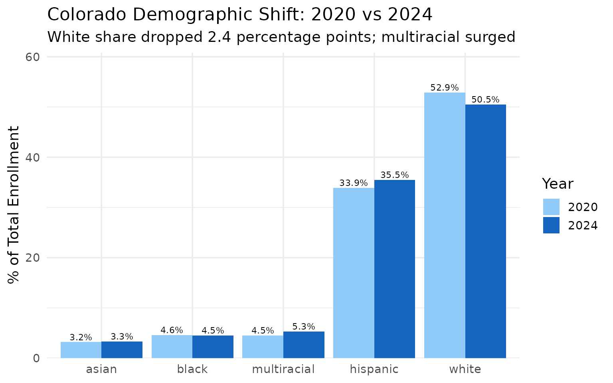
6. 261 charter schools serve 135,223 students
Colorado has one of the most expansive charter sectors in the country. Charter schools now enroll 15.3% of all public school students.
charters <- enr_2024 |>
filter(is_school, is_charter, subgroup == "total_enrollment", grade_level == "TOTAL")
state_total <- enr_2024 |>
filter(is_state, subgroup == "total_enrollment", grade_level == "TOTAL") |>
pull(n_students)
charter_summary <- tibble(
sector = c("All Public Schools", "Charter Schools"),
enrollment = c(state_total, sum(charters$n_students, na.rm = TRUE)),
pct = c(100, round(sum(charters$n_students, na.rm = TRUE) / state_total * 100, 1))
)
stopifnot(charter_summary$enrollment[2] > 0)
charter_summary
#> # A tibble: 2 × 3
#> sector enrollment pct
#> <chr> <dbl> <dbl>
#> 1 All Public Schools 881446 100
#> 2 Charter Schools 135223 15.3
top_charters <- charters |>
arrange(desc(n_students)) |>
head(5) |>
select(district_name, campus_name, n_students)
print(top_charters)
#> district_name campus_name n_students
#> 1 District 49 GOAL Academy 6142
#> 2 Douglas County Re 1 American Academy 2579
#> 3 Academy 20 The Classical Academy Charter 2149
#> 4 Charter School Institute Colorado Early Colleges Windsor 2139
#> 5 Charter School Institute The Pinnacle Charter School 1909
stopifnot(nrow(top_charters) > 0)
top_charters |>
mutate(campus_name = forcats::fct_reorder(campus_name, n_students)) |>
ggplot(aes(x = n_students, y = campus_name)) +
geom_col(fill = "#00897B") +
geom_text(aes(label = scales::comma(n_students)), hjust = -0.1, size = 3.5) +
scale_x_continuous(labels = scales::comma, expand = expansion(mult = c(0, 0.2))) +
labs(
title = "Colorado's 5 Largest Charter Schools (2024)",
subtitle = "261 charter schools serve 15.3% of all public school students",
x = "Total Enrollment",
y = NULL
)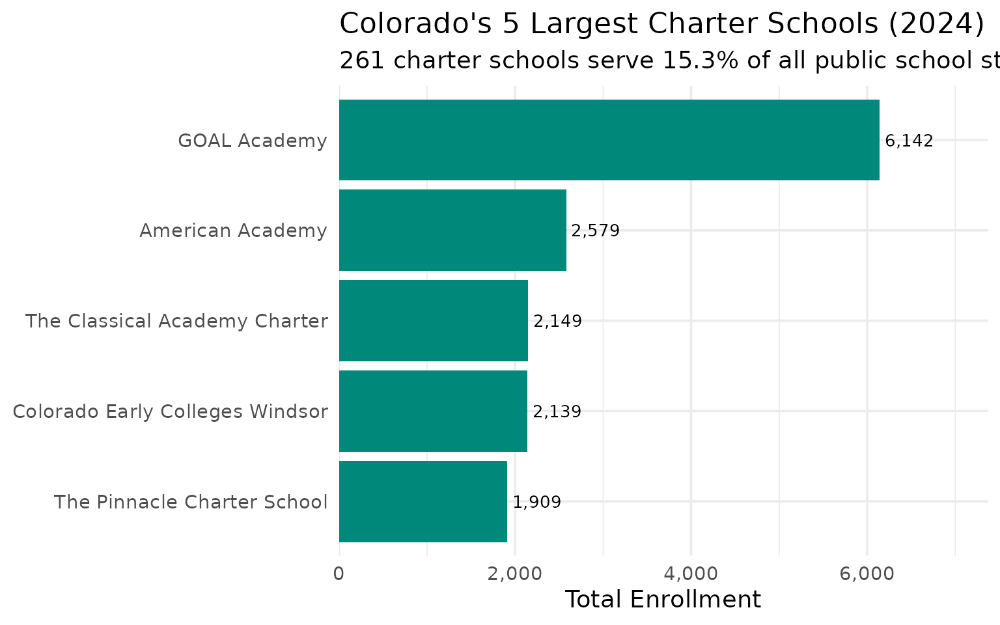
7. Adams-Arapahoe (Aurora) is Colorado’s most diverse district
Aurora Public Schools has no racial majority. Hispanic students make up 57.3%, followed by Black (16.8%), White (13.7%), Multiracial (5.9%), and Asian (4.8%).
aurora <- enr_2024 |>
filter(is_district, grade_level == "TOTAL",
grepl("Adams-Arapahoe", district_name),
subgroup %in% c("hispanic", "white", "black", "asian", "multiracial")) |>
mutate(pct = round(pct * 100, 1)) |>
select(district_name, subgroup, n_students, pct) |>
arrange(desc(pct))
stopifnot(nrow(aurora) > 0)
aurora
#> district_name subgroup n_students pct
#> 1 Adams-Arapahoe 28J hispanic 22430 57.3
#> 2 Adams-Arapahoe 28J black 6573 16.8
#> 3 Adams-Arapahoe 28J white 5355 13.7
#> 4 Adams-Arapahoe 28J multiracial 2305 5.9
#> 5 Adams-Arapahoe 28J asian 1867 4.8
print(aurora)
#> district_name subgroup n_students pct
#> 1 Adams-Arapahoe 28J hispanic 22430 57.3
#> 2 Adams-Arapahoe 28J black 6573 16.8
#> 3 Adams-Arapahoe 28J white 5355 13.7
#> 4 Adams-Arapahoe 28J multiracial 2305 5.9
#> 5 Adams-Arapahoe 28J asian 1867 4.8
aurora |>
mutate(subgroup = forcats::fct_reorder(subgroup, pct)) |>
ggplot(aes(x = pct, y = subgroup, fill = subgroup)) +
geom_col(show.legend = FALSE) +
geom_text(aes(label = paste0(pct, "%")), hjust = -0.1, size = 3.5) +
scale_x_continuous(expand = expansion(mult = c(0, 0.2))) +
scale_fill_brewer(palette = "Dark2") +
labs(
title = "Adams-Arapahoe 28J (Aurora): No Racial Majority",
subtitle = "Hispanic students are 57% of enrollment",
x = "% of District Enrollment",
y = NULL
)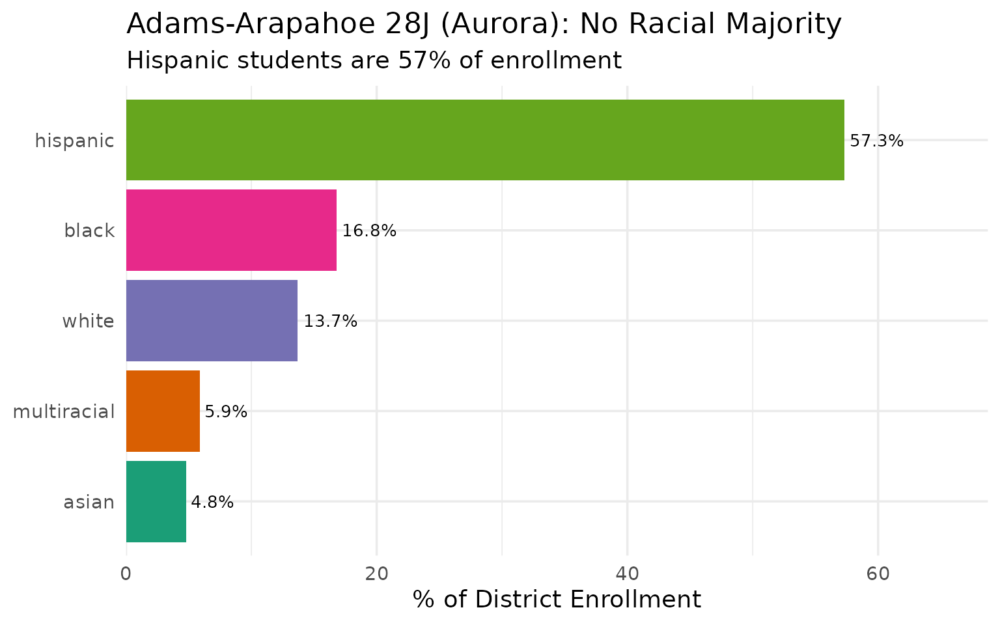
8. Nearly half of Colorado students qualify for free or reduced lunch
45.2% of Colorado students – 398,112 children – are economically disadvantaged, qualifying for free or reduced-price lunch.
frl <- enr_2024 |>
filter(is_state, grade_level == "TOTAL",
subgroup == "free_reduced_lunch") |>
mutate(pct = round(pct * 100, 1)) |>
select(subgroup, n_students, pct)
stopifnot(nrow(frl) > 0)
frl
#> subgroup n_students pct
#> 1 free_reduced_lunch 398112 45.2
frl_districts <- enr_2024 |>
filter(is_district, subgroup == "free_reduced_lunch", grade_level == "TOTAL") |>
mutate(pct = round(pct * 100, 1)) |>
filter(n_students >= 1000) |>
arrange(desc(pct)) |>
head(10) |>
select(district_name, n_students, pct)
print(frl_districts)
#> district_name n_students pct
#> 1 Adams County 14 4728 86.2
#> 2 Westminster Public Schools 6442 84.4
#> 3 Pueblo City 60 12130 83.4
#> 4 Adams-Arapahoe 28J 31204 79.7
#> 5 East Otero R-1 1055 79.6
#> 6 Lamar Re-2 1117 76.3
#> 7 Mapleton 1 5292 75.4
#> 8 Alamosa RE-11J 1495 72.7
#> 9 Harrison 2 8803 71.1
#> 10 Greeley 6 16071 71.0
frl_districts |>
mutate(district_name = forcats::fct_reorder(district_name, pct)) |>
ggplot(aes(x = pct, y = district_name)) +
geom_col(fill = "#E65100") +
geom_text(aes(label = paste0(pct, "%")), hjust = -0.1) +
scale_x_continuous(expand = expansion(mult = c(0, 0.15))) +
labs(
title = "Most Economically Disadvantaged Districts (2024)",
subtitle = "Free/Reduced Lunch rate among districts with 1,000+ students",
x = "FRL %",
y = NULL
)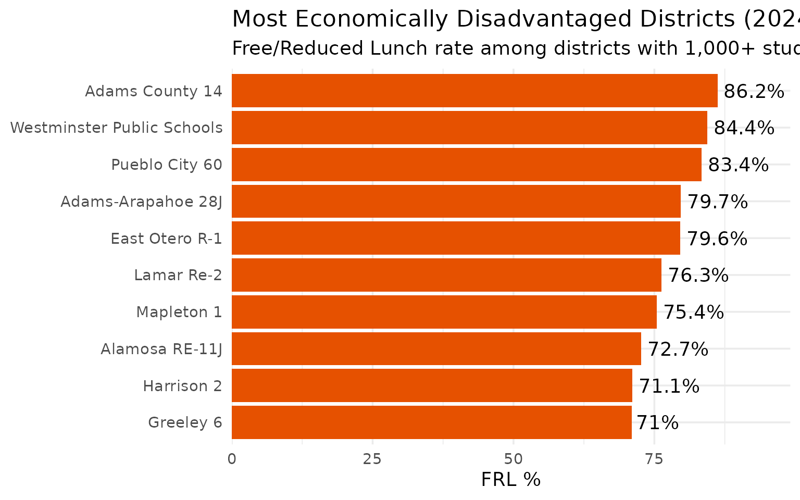
9. Byers 32J grew 175% in four years
Byers 32J, northeast of Denver, surged from 2,344 to 6,456 students – the fastest growth rate of any district in Colorado.
changes <- enr |>
filter(is_district, subgroup == "total_enrollment", grade_level == "TOTAL") |>
select(end_year, district_name, n_students) |>
pivot_wider(names_from = end_year, values_from = n_students, values_fn = sum) |>
filter(!is.na(`2020`) & !is.na(`2024`)) |>
mutate(change = `2024` - `2020`,
pct_change = round(change / `2020` * 100, 1)) |>
filter(`2020` >= 1000)
gainers <- changes |>
arrange(desc(pct_change)) |>
head(10)
stopifnot(nrow(gainers) > 0)
gainers
#> # A tibble: 10 × 5
#> district_name `2020` `2024` change pct_change
#> <chr> <dbl> <dbl> <dbl> <dbl>
#> 1 Byers 32J 2344 6456 4112 175.
#> 2 Education reEnvisioned BOCES 2836 7114 4278 151.
#> 3 Bennett 29J 1117 1645 528 47.3
#> 4 Charter School Institute 18275 23013 4738 25.9
#> 5 School District 27J 19248 23108 3860 20.1
#> 6 Elizabeth School District 2373 2614 241 10.2
#> 7 Strasburg 31J 1080 1187 107 9.9
#> 8 District 49 23890 25799 1909 8
#> 9 Platte Valley RE-7 1093 1179 86 7.9
#> 10 Harrison 2 11518 12386 868 7.5
print(gainers)
#> # A tibble: 10 × 5
#> district_name `2020` `2024` change pct_change
#> <chr> <dbl> <dbl> <dbl> <dbl>
#> 1 Byers 32J 2344 6456 4112 175.
#> 2 Education reEnvisioned BOCES 2836 7114 4278 151.
#> 3 Bennett 29J 1117 1645 528 47.3
#> 4 Charter School Institute 18275 23013 4738 25.9
#> 5 School District 27J 19248 23108 3860 20.1
#> 6 Elizabeth School District 2373 2614 241 10.2
#> 7 Strasburg 31J 1080 1187 107 9.9
#> 8 District 49 23890 25799 1909 8
#> 9 Platte Valley RE-7 1093 1179 86 7.9
#> 10 Harrison 2 11518 12386 868 7.5
gainers |>
mutate(district_name = forcats::fct_reorder(district_name, pct_change)) |>
ggplot(aes(x = pct_change, y = district_name)) +
geom_col(fill = "#4CAF50") +
geom_text(aes(label = paste0("+", pct_change, "%")), hjust = -0.1, size = 3) +
scale_x_continuous(expand = expansion(mult = c(0, 0.2))) +
labs(
title = "Fastest-Growing Colorado Districts (2020-2024)",
subtitle = "Among districts with 1,000+ students in 2020",
x = "% Change in Enrollment",
y = NULL
)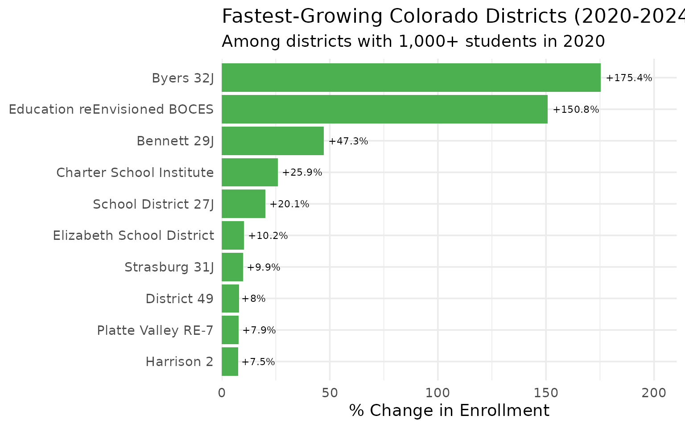
10. 9 of the 10 largest districts lost students
Academy 20 was the sole top-10 district to hold steady (gaining 4 students). Everyone else shrank, led by Jefferson County (-9.4%) and Adams 12 Five Star (-9.4%).
top10_names <- enr_2024 |>
filter(is_district, subgroup == "total_enrollment", grade_level == "TOTAL") |>
arrange(desc(n_students)) |>
head(10) |>
pull(district_name)
top10_compare <- enr |>
filter(is_district, subgroup == "total_enrollment", grade_level == "TOTAL",
district_name %in% top10_names) |>
select(end_year, district_name, n_students) |>
pivot_wider(names_from = end_year, values_from = n_students, values_fn = sum) |>
mutate(change = `2024` - `2020`,
pct_change = round(change / `2020` * 100, 1)) |>
arrange(pct_change)
stopifnot(nrow(top10_compare) == 10)
top10_compare
#> # A tibble: 10 × 5
#> district_name `2020` `2024` change pct_change
#> <chr> <dbl> <dbl> <dbl> <dbl>
#> 1 Adams 12 Five Star Schools 38648 34998 -3650 -9.4
#> 2 Jefferson County R-1 84032 76172 -7860 -9.4
#> 3 Boulder Valley Re 2 31000 28362 -2638 -8.5
#> 4 Douglas County Re 1 67305 61964 -5341 -7.9
#> 5 Cherry Creek 5 56172 52419 -3753 -6.7
#> 6 Denver County 1 92112 88235 -3877 -4.2
#> 7 Poudre R-1 30727 29896 -831 -2.7
#> 8 Adams-Arapahoe 28J 40088 39148 -940 -2.3
#> 9 St Vrain Valley RE1J 32855 32506 -349 -1.1
#> 10 Academy 20 26603 26607 4 0
print(top10_compare)
#> # A tibble: 10 × 5
#> district_name `2020` `2024` change pct_change
#> <chr> <dbl> <dbl> <dbl> <dbl>
#> 1 Adams 12 Five Star Schools 38648 34998 -3650 -9.4
#> 2 Jefferson County R-1 84032 76172 -7860 -9.4
#> 3 Boulder Valley Re 2 31000 28362 -2638 -8.5
#> 4 Douglas County Re 1 67305 61964 -5341 -7.9
#> 5 Cherry Creek 5 56172 52419 -3753 -6.7
#> 6 Denver County 1 92112 88235 -3877 -4.2
#> 7 Poudre R-1 30727 29896 -831 -2.7
#> 8 Adams-Arapahoe 28J 40088 39148 -940 -2.3
#> 9 St Vrain Valley RE1J 32855 32506 -349 -1.1
#> 10 Academy 20 26603 26607 4 0
top10_compare |>
mutate(district_name = forcats::fct_reorder(district_name, pct_change)) |>
ggplot(aes(x = pct_change, y = district_name,
fill = ifelse(pct_change >= 0, "gain", "loss"))) +
geom_col(show.legend = FALSE) +
geom_text(aes(label = paste0(pct_change, "%")),
hjust = ifelse(top10_compare$pct_change >= 0, -0.1, 1.1)) +
scale_fill_manual(values = c("gain" = "#4CAF50", "loss" = "#F44336")) +
labs(
title = "Top 10 Districts: Change from 2020 to 2024",
subtitle = "Only Academy 20 held steady; the rest all shrank",
x = "% Change",
y = NULL
)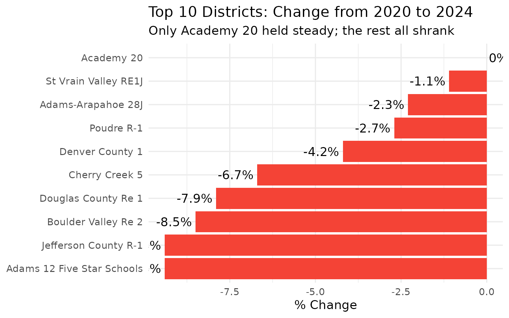
11. 115 tiny districts serve fewer than 1,000 students each
Colorado has an extraordinarily fragmented school system. Over 60% of districts enroll fewer than 1,000 students, though they educate a small fraction of the total.
size_cats <- enr_2024 |>
filter(is_district, subgroup == "total_enrollment", grade_level == "TOTAL") |>
mutate(size = case_when(
n_students >= 20000 ~ "Large (20K+)",
n_students >= 5000 ~ "Medium (5K-20K)",
n_students >= 1000 ~ "Small (1K-5K)",
TRUE ~ "Tiny (<1K)"
)) |>
group_by(size) |>
summarize(
n_districts = n(),
total_students = sum(n_students),
.groups = "drop"
) |>
mutate(pct_students = round(total_students / sum(total_students) * 100, 1))
stopifnot(nrow(size_cats) > 0)
size_cats
#> # A tibble: 4 × 4
#> size n_districts total_students pct_students
#> <chr> <int> <dbl> <dbl>
#> 1 Large (20K+) 16 607827 69
#> 2 Medium (5K-20K) 18 155496 17.6
#> 3 Small (1K-5K) 37 78414 8.9
#> 4 Tiny (<1K) 115 39709 4.5
smallest <- enr_2024 |>
filter(is_district, subgroup == "total_enrollment", grade_level == "TOTAL") |>
arrange(n_students) |>
head(10) |>
select(district_name, n_students)
print(smallest)
#> district_name n_students
#> 1 Kim Reorganized 88 26
#> 2 Campo RE-6 31
#> 3 Karval RE-23 36
#> 4 San Juan BOCES 51
#> 5 Pritchett RE-3 61
#> 6 Liberty J-4 64
#> 7 Pawnee RE-12 68
#> 8 Edison 54 JT 74
#> 9 Agate 300 75
#> 10 Silverton 1 75
stopifnot(nrow(size_cats) > 0)
size_cats |>
mutate(size = factor(size, levels = c("Tiny (<1K)", "Small (1K-5K)",
"Medium (5K-20K)", "Large (20K+)"))) |>
ggplot(aes(x = size, y = n_districts, fill = size)) +
geom_col(show.legend = FALSE) +
geom_text(aes(label = paste0(n_districts, " districts\n(",
pct_students, "% of students)")),
vjust = -0.2, size = 3) +
scale_fill_manual(values = c("Tiny (<1K)" = "#FFCC80", "Small (1K-5K)" = "#FFB74D",
"Medium (5K-20K)" = "#FF9800", "Large (20K+)" = "#E65100")) +
scale_y_continuous(expand = expansion(mult = c(0, 0.2))) +
labs(
title = "Colorado District Size Distribution (2024)",
subtitle = "115 tiny districts serve only 4.5% of students",
x = NULL,
y = "Number of Districts"
)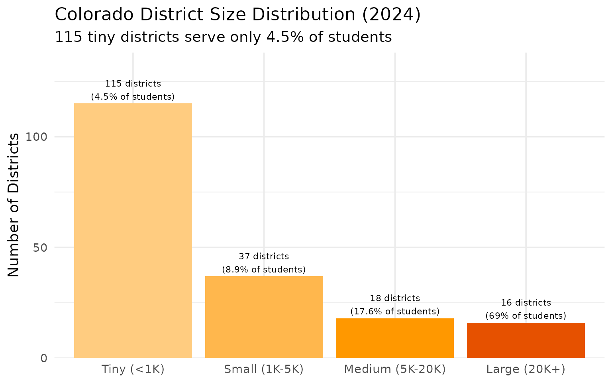
12. Las Animas RE-1 lost 60% of its enrollment
The starkest decline in Colorado. Las Animas RE-1 went from 2,406 students in 2020 to just 956 in 2024 – a loss of 1,450 students.
losers <- changes |>
arrange(pct_change) |>
head(10)
stopifnot(nrow(losers) > 0)
losers
#> # A tibble: 10 × 5
#> district_name `2020` `2024` change pct_change
#> <chr> <dbl> <dbl> <dbl> <dbl>
#> 1 Las Animas RE-1 2406 956 -1450 -60.3
#> 2 Cheyenne Mountain 12 5309 3739 -1570 -29.6
#> 3 Mapleton 1 9131 7017 -2114 -23.2
#> 4 Sheridan 2 1359 1058 -301 -22.1
#> 5 Adams County 14 6610 5484 -1126 -17
#> 6 Valley RE-1 2258 1887 -371 -16.4
#> 7 Westminster Public Schools 9089 7631 -1458 -16
#> 8 Manitou Springs 14 1441 1238 -203 -14.1
#> 9 Monte Vista C-8 1168 1010 -158 -13.5
#> 10 Ellicott 22 1142 990 -152 -13.3
print(losers)
#> # A tibble: 10 × 5
#> district_name `2020` `2024` change pct_change
#> <chr> <dbl> <dbl> <dbl> <dbl>
#> 1 Las Animas RE-1 2406 956 -1450 -60.3
#> 2 Cheyenne Mountain 12 5309 3739 -1570 -29.6
#> 3 Mapleton 1 9131 7017 -2114 -23.2
#> 4 Sheridan 2 1359 1058 -301 -22.1
#> 5 Adams County 14 6610 5484 -1126 -17
#> 6 Valley RE-1 2258 1887 -371 -16.4
#> 7 Westminster Public Schools 9089 7631 -1458 -16
#> 8 Manitou Springs 14 1441 1238 -203 -14.1
#> 9 Monte Vista C-8 1168 1010 -158 -13.5
#> 10 Ellicott 22 1142 990 -152 -13.3
losers |>
mutate(district_name = forcats::fct_reorder(district_name, pct_change)) |>
ggplot(aes(x = pct_change, y = district_name)) +
geom_col(fill = "#F44336") +
geom_text(aes(label = paste0(pct_change, "%")), hjust = 1.1, size = 3, color = "white") +
scale_x_continuous(expand = expansion(mult = c(0.05, 0))) +
labs(
title = "Fastest-Shrinking Colorado Districts (2020-2024)",
subtitle = "Las Animas RE-1 lost 60% of its enrollment",
x = "% Change in Enrollment",
y = NULL
)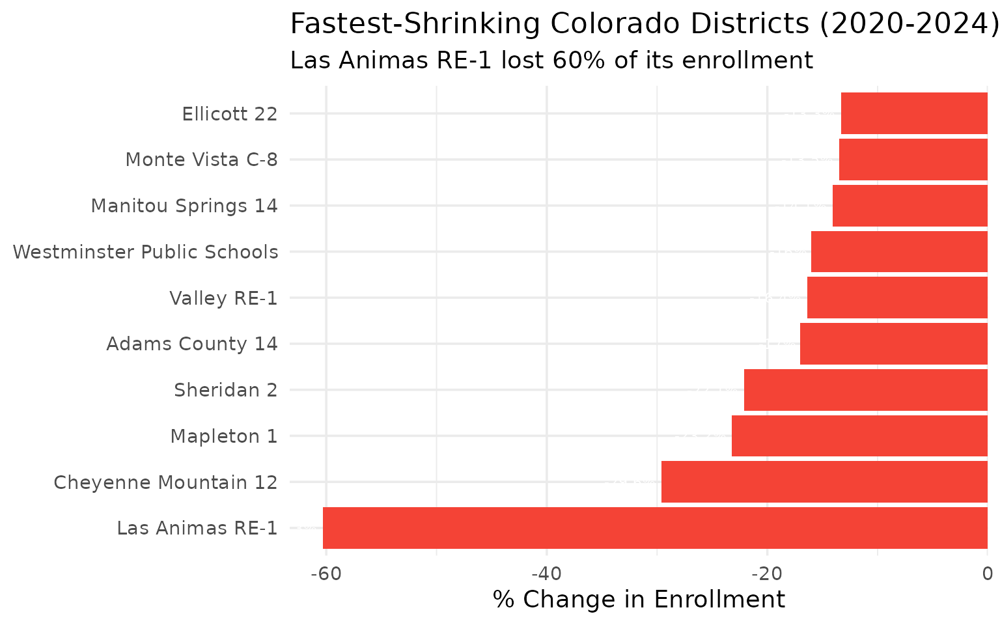
13. Adams County 14 has 86% economically disadvantaged students
Adams County 14, in the northern Denver metro area, has the highest free/reduced lunch rate among districts with 1,000+ students.
frl_top5 <- enr_2024 |>
filter(is_district, subgroup == "free_reduced_lunch", grade_level == "TOTAL") |>
mutate(pct = round(pct * 100, 1)) |>
filter(n_students >= 1000) |>
arrange(desc(pct)) |>
head(5) |>
select(district_name, n_students, pct)
stopifnot(nrow(frl_top5) > 0)
frl_top5
#> district_name n_students pct
#> 1 Adams County 14 4728 86.2
#> 2 Westminster Public Schools 6442 84.4
#> 3 Pueblo City 60 12130 83.4
#> 4 Adams-Arapahoe 28J 31204 79.7
#> 5 East Otero R-1 1055 79.6
print(frl_top5)
#> district_name n_students pct
#> 1 Adams County 14 4728 86.2
#> 2 Westminster Public Schools 6442 84.4
#> 3 Pueblo City 60 12130 83.4
#> 4 Adams-Arapahoe 28J 31204 79.7
#> 5 East Otero R-1 1055 79.6
frl_top5 |>
mutate(district_name = forcats::fct_reorder(district_name, pct)) |>
ggplot(aes(x = pct, y = district_name)) +
geom_col(fill = "#E65100") +
geom_text(aes(label = paste0(pct, "%")), hjust = -0.1, size = 3.5) +
geom_vline(xintercept = 45.2, linetype = "dashed", alpha = 0.5) +
annotate("text", x = 45.2, y = 0.5, label = "State avg\n45.2%",
hjust = 1.1, size = 2.5) +
scale_x_continuous(expand = expansion(mult = c(0, 0.15))) +
labs(
title = "Highest FRL Rate Districts (2024)",
subtitle = "Among districts with 1,000+ students",
x = "Free/Reduced Lunch %",
y = NULL
)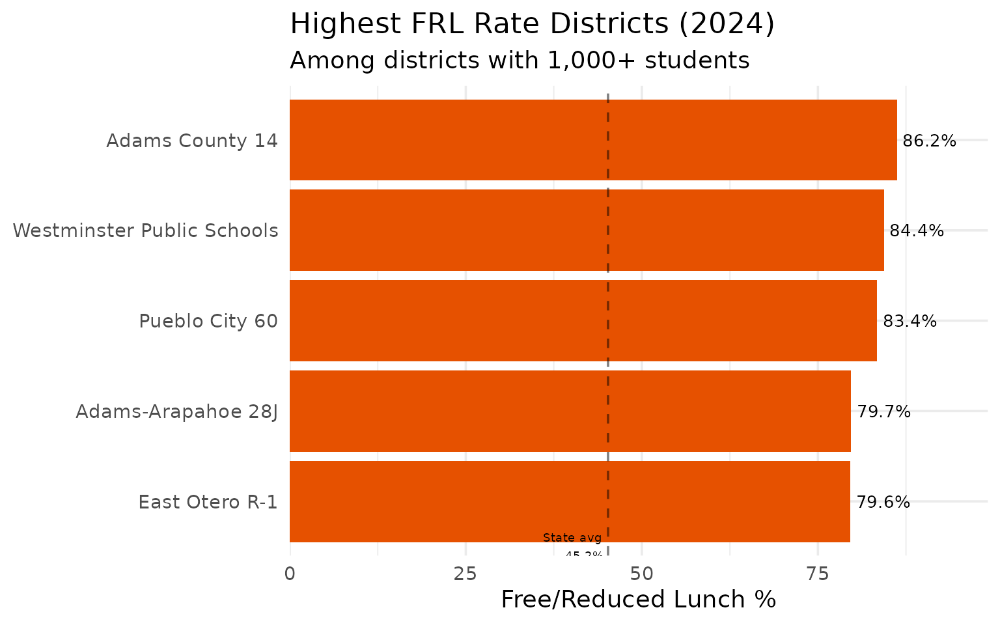
14. Colorado’s gender split: 51.3% male, 48.7% female
Like most states, Colorado enrolls slightly more boys than girls – a gap of about 23,000 students.
gender <- enr_2024 |>
filter(is_state, grade_level == "TOTAL",
subgroup %in% c("male", "female")) |>
mutate(pct = round(pct * 100, 1)) |>
select(subgroup, n_students, pct)
stopifnot(nrow(gender) == 2)
gender
#> subgroup n_students pct
#> 1 female 428834 48.7
#> 2 male 452215 51.3
print(gender)
#> subgroup n_students pct
#> 1 female 428834 48.7
#> 2 male 452215 51.3
gender |>
mutate(subgroup = factor(subgroup, levels = c("female", "male"))) |>
ggplot(aes(x = subgroup, y = n_students, fill = subgroup)) +
geom_col(show.legend = FALSE) +
geom_text(aes(label = paste0(scales::comma(n_students), "\n(", pct, "%)")),
vjust = -0.2, size = 4) +
scale_y_continuous(labels = scales::comma, expand = expansion(mult = c(0, 0.15))) +
scale_fill_manual(values = c("female" = "#E91E63", "male" = "#2196F3")) +
labs(
title = "Colorado Student Gender Distribution (2024)",
subtitle = "23,381 more boys than girls enrolled",
x = NULL,
y = "Number of Students"
)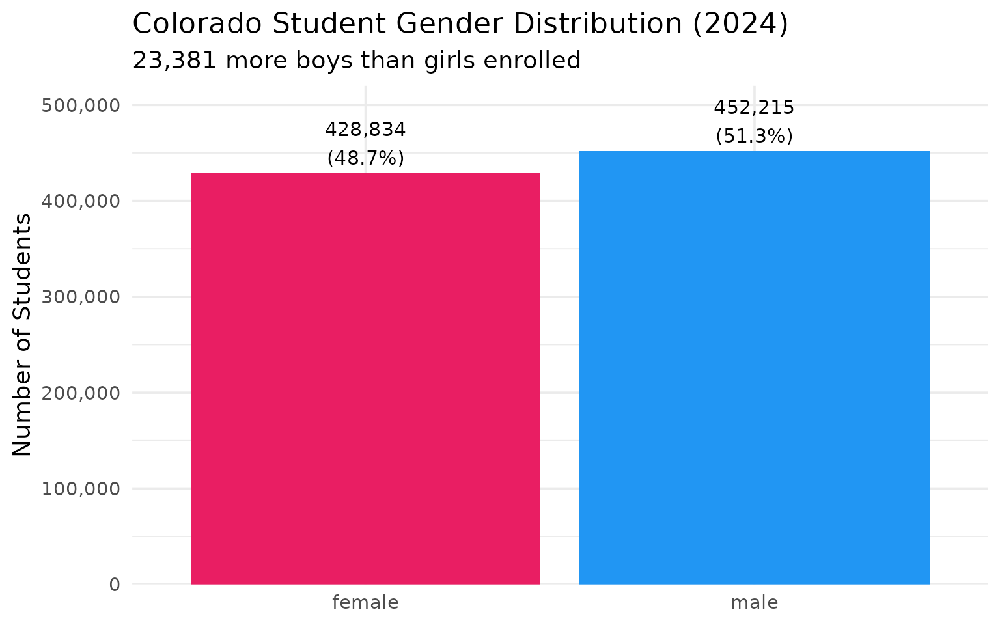
15. Top 10 districts serve 53% of all students
Just 10 districts out of 187 educate more than half of Colorado’s public school students, showing extreme concentration of enrollment in the Front Range metro areas.
district_totals <- enr_2024 |>
filter(is_district, subgroup == "total_enrollment", grade_level == "TOTAL") |>
arrange(desc(n_students)) |>
head(10) |>
select(district_name, n_students)
state_total_val <- enr_2024 |>
filter(is_state, subgroup == "total_enrollment", grade_level == "TOTAL") |>
pull(n_students)
top_10_pct <- round(sum(district_totals$n_students) / state_total_val * 100, 1)
result <- district_totals |>
mutate(pct_of_state = round(n_students / state_total_val * 100, 1))
stopifnot(nrow(result) == 10)
result
#> district_name n_students pct_of_state
#> 1 Denver County 1 88235 10.0
#> 2 Jefferson County R-1 76172 8.6
#> 3 Douglas County Re 1 61964 7.0
#> 4 Cherry Creek 5 52419 5.9
#> 5 Adams-Arapahoe 28J 39148 4.4
#> 6 Adams 12 Five Star Schools 34998 4.0
#> 7 St Vrain Valley RE1J 32506 3.7
#> 8 Poudre R-1 29896 3.4
#> 9 Boulder Valley Re 2 28362 3.2
#> 10 Academy 20 26607 3.0
print(result)
#> district_name n_students pct_of_state
#> 1 Denver County 1 88235 10.0
#> 2 Jefferson County R-1 76172 8.6
#> 3 Douglas County Re 1 61964 7.0
#> 4 Cherry Creek 5 52419 5.9
#> 5 Adams-Arapahoe 28J 39148 4.4
#> 6 Adams 12 Five Star Schools 34998 4.0
#> 7 St Vrain Valley RE1J 32506 3.7
#> 8 Poudre R-1 29896 3.4
#> 9 Boulder Valley Re 2 28362 3.2
#> 10 Academy 20 26607 3.0
district_totals |>
mutate(district_name = forcats::fct_reorder(district_name, n_students)) |>
ggplot(aes(x = n_students, y = district_name)) +
geom_col(fill = "#673AB7") +
geom_text(aes(label = scales::comma(n_students)), hjust = -0.1, size = 3.5) +
scale_x_continuous(labels = scales::comma, expand = expansion(mult = c(0, 0.15))) +
labs(
title = "Colorado's 10 Largest School Districts (2024)",
subtitle = paste0("These districts serve ", top_10_pct, "% of all students"),
x = "Total Enrollment",
y = NULL
)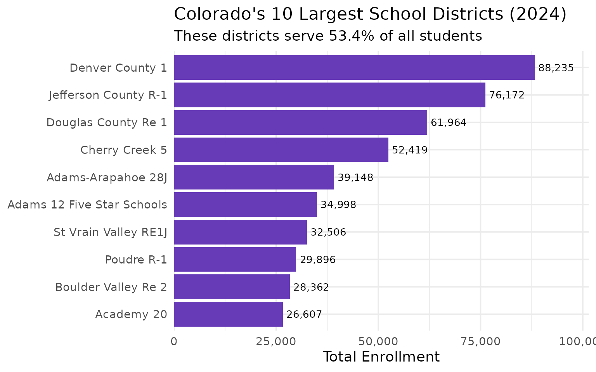
Summary
Colorado’s school enrollment data reveals:
- Shrinking enrollment: 31,584 fewer students since 2020 (-3.5%)
- Urban decline: Denver, Jeffco, and all but one top-10 district losing students
- Demographic shift: White share fell to 50.5%, Hispanic grew to 35.5%
- Charter expansion: 261 charter schools enroll 15.3% of students
- Economic disparity: 45.2% of students qualify for free/reduced lunch
- Fragmented system: 115 tiny districts under 1,000 students
- Concentrated enrollment: Top 10 districts serve 53% of students
Data sourced from the Colorado Department of Education Student October Count.
Session Info
sessionInfo()
#> R version 4.5.2 (2025-10-31)
#> Platform: x86_64-pc-linux-gnu
#> Running under: Ubuntu 24.04.3 LTS
#>
#> Matrix products: default
#> BLAS: /usr/lib/x86_64-linux-gnu/openblas-pthread/libblas.so.3
#> LAPACK: /usr/lib/x86_64-linux-gnu/openblas-pthread/libopenblasp-r0.3.26.so; LAPACK version 3.12.0
#>
#> locale:
#> [1] LC_CTYPE=C.UTF-8 LC_NUMERIC=C LC_TIME=C.UTF-8
#> [4] LC_COLLATE=C.UTF-8 LC_MONETARY=C.UTF-8 LC_MESSAGES=C.UTF-8
#> [7] LC_PAPER=C.UTF-8 LC_NAME=C LC_ADDRESS=C
#> [10] LC_TELEPHONE=C LC_MEASUREMENT=C.UTF-8 LC_IDENTIFICATION=C
#>
#> time zone: UTC
#> tzcode source: system (glibc)
#>
#> attached base packages:
#> [1] stats graphics grDevices utils datasets methods base
#>
#> other attached packages:
#> [1] ggplot2_4.0.2 tidyr_1.3.2 dplyr_1.2.0 coschooldata_0.1.0
#> [5] rmarkdown_2.30
#>
#> loaded via a namespace (and not attached):
#> [1] gtable_0.3.6 jsonlite_2.0.0 compiler_4.5.2 tidyselect_1.2.1
#> [5] jquerylib_0.1.4 systemfonts_1.3.1 scales_1.4.0 textshaping_1.0.4
#> [9] yaml_2.3.12 fastmap_1.2.0 R6_2.6.1 labeling_0.4.3
#> [13] generics_0.1.4 knitr_1.51 forcats_1.0.1 tibble_3.3.1
#> [17] desc_1.4.3 bslib_0.10.0 pillar_1.11.1 RColorBrewer_1.1-3
#> [21] rlang_1.1.7 utf8_1.2.6 cachem_1.1.0 xfun_0.56
#> [25] fs_1.6.6 sass_0.4.10 S7_0.2.1 cli_3.6.5
#> [29] withr_3.0.2 pkgdown_2.2.0 magrittr_2.0.4 digest_0.6.39
#> [33] grid_4.5.2 lifecycle_1.0.5 vctrs_0.7.1 evaluate_1.0.5
#> [37] glue_1.8.0 farver_2.1.2 codetools_0.2-20 ragg_1.5.0
#> [41] purrr_1.2.1 tools_4.5.2 pkgconfig_2.0.3 htmltools_0.5.9